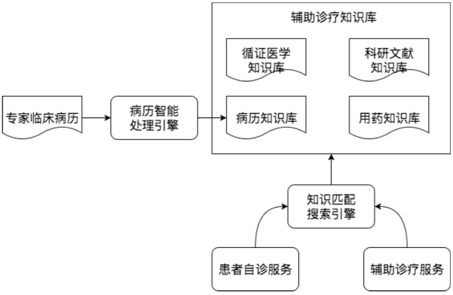

- 00 开篇词 为什么说每个软件工程师都应该懂大数据技术？.md
- 01 大数据技术发展史：大数据的前世今生.md
- 02 大数据应用发展史：从搜索引擎到人工智能.md
- 03 大数据应用领域：数据驱动一切.md
- 04 移动计算比移动数据更划算.md
- 05 从RAID看垂直伸缩到水平伸缩的演化.md
- 06 新技术层出不穷，HDFS依然是存储的王者.md
- 07 为什么说MapReduce既是编程模型又是计算框架？.md
- 08 MapReduce如何让数据完成一次旅行？.md
- 09 为什么我们管Yarn叫作资源调度框架？.md
- 10 模块答疑：我们能从Hadoop学到什么？.md
- 11 Hive是如何让MapReduce实现SQL操作的？.md
- 12 我们并没有觉得MapReduce速度慢，直到Spark出现.md
- 13 同样的本质，为何Spark可以更高效？.md
- 14 BigTable的开源实现：HBase.md
- 15 流式计算的代表：Storm、Flink、Spark Streaming.md
- 16 ZooKeeper是如何保证数据一致性的？.md
- 17 模块答疑：这么多技术，到底都能用在什么场景里？.md
- 18 如何自己开发一个大数据SQL引擎？.md
- 19 Spark的性能优化案例分析（上）.md
- 20 Spark的性能优化案例分析（下）.md
- 21 从阿里内部产品看海量数据处理系统的设计（上）：Doris的立项.md
- 22 从阿里内部产品看海量数据处理系统的设计（下）：架构与创新.md
- 23 大数据基准测试可以带来什么好处？.md
- 24 从大数据性能测试工具Dew看如何快速开发大数据系统.md
- 25 模块答疑：我能从大厂的大数据开发实践中学到什么？.md
- 26 互联网产品 + 大数据产品 = 大数据平台.md
- 27 大数据从哪里来？.md
- 28 知名大厂如何搭建大数据平台？.md
- 29 盘点可供中小企业参考的商业大数据平台.md
- 30 当大数据遇上物联网.md
- 31 模块答疑：为什么大数据平台至关重要？.md
- 32 互联网运营数据指标与可视化监控.md
- 33 一个电商网站订单下降的数据分析案例.md
- 34 A_B测试与灰度发布必知必会.md
- 35 如何利用大数据成为“增长黑客”？.md
- 36 模块答疑：为什么说数据驱动运营？.md
- 37 如何对数据进行分类和预测？.md
- 38 如何发掘数据之间的关系？.md
- 39 如何预测用户的喜好？.md
- 40 机器学习的数学原理是什么？.md
- 41 从感知机到神经网络算法.md
- 42 模块答疑：软件工程师如何进入人工智能领域？.md
- 所有的不确定都是机会——智慧写给你的新年寄语.md
- 第2季回归丨大数据之后，让我们回归后端.md
- 结束语 未来的你，有无限可能.md
03 大数据应用领域：数据驱动一切
大数据出现的时间只有十几年，被人们广泛接受并应用只有几年的时间，但就是这短短几年的时间，大数据呈现出爆炸式增长的态势。在各个领域，大数据的身影几乎无处不在。今天我们通过一些大数据典型的应用场景分析，一起来看看大数据到底能做些什么，我们学大数据究竟有什么用，应该关注大数据的哪些方面。
大数据在医疗健康领域的应用
健康医疗领域是最近几年获得最多创业者和投资人青睐的大数据领域。为什么这么说呢？首先，医疗健康领域会产生大量的数据；其次，医疗健康领域有一个万亿级的市场规模；最关键的是，医疗健康领域里很多工作依赖人的经验，而这正是机器学习的强项。
1.医学影像智能识别
图像识别是机器学习获得的重大突破之一，使用大量的图片数据进行深度机器学习训练，机器可以识别出特定的图像元素，比如猫或者人脸，当然也可以识别出病理特征。
比如X光片里的异常病灶位置，是可以通过机器学习智能识别出来的。甚至可以说医学影像智能识别在某些方面已经比一般医生拥有更高的读图和识别能力，但是鉴于医疗的严肃性，现在还很少有临床方面的实践。
虽然在临床实践方面应用有限，但是医疗影像AI还是在一些领域取得一定的进展。医学影像智能识别，一方面可以帮助医生进行辅助诊疗，另一方面对于皮肤病等有外部表现的病症，病人可以自己拍照然后使用AI智能识别做一个初步诊断。
2.病历大数据智能诊疗
病历，特别是专家写的病历，本身就是一笔巨大的知识财富，利用大数据技术将这些知识进行处理、分析、统计、 挖掘，可以构成一个病历知识库，可以分享给更多人，即构成一个智能辅助诊疗系统。下面这张图是我曾经参与设计过的一个医疗辅助诊疗系统的架构。

针对同类疾病和其他上下文信息（化验结果、病史、年龄性别、病人回访信息等）可以挖掘出针对同样的疾病情况，哪种治疗手段可以用更低的治疗成本、更少的病人痛苦，获得更好的治疗效果。从上面的架构图你能看到，将这些病历知识和循证医学知识、科研文献知识、用药知识共同构成一个辅助诊疗知识库，通过知识匹配搜索引擎可以对外提供服务。患者或者医生录入病史、检查结果等信息，系统匹配初步诊断结果，搜索诊疗计划，产生多个辅助诊疗建议，供患者和医生进行参考。
大数据在教育领域的应用
教育倡导“因人施教”，但是在传统教育过程中要做到因人施教，需要老师本身能力很强才能把握好。但是大数据在线教育利用大数据技术进行分析统计，完全可以做到根据学生能力和学习节奏，及时调整学习大纲和学习进度，提供个性化和自适应的学习体验。除此之外，人工智能在教育的其他方面也取得很好的进展。
1. AI外语老师
得益于语音识别和语音合成技术的成熟（语音识别与合成技术同样是利用大数据技术进行机器学习与训练），一些在线教育网站尝试用人工智能外语老师进行外语教学。这里面的原理其实并不复杂，聊天机器人技术已经普遍应用，只要将学习的知识点设计进聊天的过程中，就可以实现一个简单的AI外语老师了。
2.智能解题
比较简单的智能解题系统其实是利用搜索引擎技术，在收集大量的试题以及答案的基础上，进行试题匹配，将匹配成功的答案返回。这个过程看起来就像智能做题一样，表面看给个题目就能解出答案，而实际上只是找到答案。
进阶一点的智能解题系统，通过图像识别与自然语言处理（这两项技术依然使用大数据技术实现），进行相似性匹配。更改试题的部分数字、文字表述，但是不影响实质性解答思路，依然可以解答。
高阶的智能解题系统，利用神经网络机器学习技术，将试题的自然语言描述转化成形式语言，然后分析知识点和解题策略，进行自动推导，从而完成实质性的解题。
大数据在社交媒体领域的应用
大数据有一个重要的、和我们大多数人密切相关，但是又不太引人注目的一个应用领域是舆情监控与分析。我们日常在各种互联网应用和社交媒体上发表各种言论，这些言论事实上反映了最准确的民情舆论。一个个体的言论基本没有意义，但是大量的、全国乃至全球的言论数据表现出的统计特性，就有了非常重要的意义。
编写数据爬虫，实时爬取各个社交新媒体上的各种用户内容和媒体信息，然后通过自然语言处理，就可以进行情感分析、热点事件追踪等。舆情实时监控可用于商业领域，引导智能广告投放；可用于金融领域，辅助执行自动化股票、期权、数字货币交易；可用于社会管理，及时发现可能引发社会问题的舆论倾向。
在美国总统大选期间，候选人就曾雇佣大数据公司利用社交媒体的数据进行分析，发现选票可能摇摆的地区，有针对性前去进行竞选演讲。并利用大数据分析选民关注的话题，包装自己的竞选主张。Facebook也因为授权大数据公司滥用自己用户的数据而遭到调查和谴责，市值蒸发了数百亿美元。
大数据在金融领域的应用
大数据在金融领域应用比较成熟的是大数据风控。在金融借贷中，如何识别出高风险用户，要求其提供更多抵押、支付更高利息、调整更低的额度，甚至拒绝贷款，从而降低金融机构的风险？事实上，金融行业已经沉淀了大量的历史数据，利用这些数据进行计算，可以得到用户特征和风险指数的曲线（即风控模型）。当新用户申请贷款的时候，将该用户特征带入曲线进行计算，就可以得到该用户的风险指数，进而自动给出该用户的贷款策略。
利用股票、外汇等历史交易记录，分析交易规律，结合当前的新闻热点、舆论倾向、财经数据构建交易模型，进行自动化交易，这就是金融领域的量化交易。这些数据量特别巨大，交易涉及金额也同样巨大，所以金融机构在大数据领域常常不惜血本，大手笔投入。
大数据在新零售领域的应用
区别于传统零售，新零售使用大数据进行全链路管理。从生产、物流、购物体验，使用大数据进行分析和预判，实现精准生产、零库存、全新的购物体验。
亚马逊Go无人店使用大量的摄像头，实时捕捉用户行为，判断用户取出还是放回商品、取了何种商品等。这实际上是大数据流计算与机器学习的结合，最终实现的购物效果是，无需排队买单，进去就拿东西，拿好了就走，超级科幻有没有。
虽然无人店现在看起来噱头的意味更多一点，但是利用大数据技术提升购物体验、节省商家人力成本一定是正确的方向。
大数据在交通领域的应用
交通也是一个对大数据实时采集与处理应用比较广的领域。现在几乎所有的城市路段、交通要点都有不止一个监控摄像头在实时监控，一线城市大约有百万计的摄像头在不停地采集数据。这些数据一方面可以用于公共安全，比如近年来一些警匪片里会有一些场景：犯罪嫌疑人驾车出逃，警方只要定位了车辆，不管它到哪里，系统都可以自动调出相应的摄像头，实时看到现场画面。应该说这项技术已经成熟，大数据流计算可以对百万计的流数据实时处理计算，电影里的场景计算其实并不复杂。
此外，各种导航软件也在不停采集数据，通过分析用户当前位置和移动速度，判断道路拥堵状态，并实时修改推荐的导航路径。你如果经常开车或者打车，对这些技术一定深有体会。
还有就是无人驾驶技术，无人驾驶就是在人的驾驶过程中实时采集车辆周边数据和驾驶控制信息，然后通过机器学习，获得周边信息与驾驶方式的对应关系（自动驾驶模型）。然后将这个模型应用到无人驾驶汽车上，传感器获得车辆周边数据后，就可以通过自动驾驶模型计算出车辆控制信息（转向、刹车等）。计算自动驾驶模型需要大量的数据，所以我们看到，这些无人驾驶创业公司都在不断攀比自己的训练数据有几十万公里、几百万公里，因为训练数据的量意味着模型的完善程度。
小结
正如我前面所说，利用大数据和机器学习，发掘数据中的规律，进而对当前的事情做出预测和判断，使机器表现出智能的特性，正变得越来越普及。
大数据主要来自企业自身所产生，还有一些数据来自互联网，通过网络爬虫可以获取；再有就是公共数据，比如气象数据等。所有这些数据汇聚在一起，计算其内在的关系，可以发现很多肉眼和思维无法得到的知识。然后进一步计算其内在的模型，可以使系统获得智能的特性。当系统具备智能的特性，可以使机器对当前的事情做出预测和判断，正如我今天和你聊的，大数据技术应用正变得越来越普及。
但是，这些数据通常非常巨大，存储、计算、应用都需要一套不同以往的技术方案。通过前面3期内容，我带你了解了大数据技术和应用的发展史，以及当今大数据典型的应用领域。从第4期开始，我将会从大数据主要产品的架构原理、大数据分析与应用、数据挖掘与机器学习算法等几个维度，全面讲解大数据的方方面面，相信你一定有所收获。
思考题
除了我今天聊的这几个领域应用了大数据技术，你还能举出其他典型的大数据应用吗？你知道它实现的原理吗？
欢迎你写下自己的思考或疑问，与我和其他同学一起讨论。
© 2019 - 2023 Liangliang Lee. Powered by gin and hexo-theme-book.